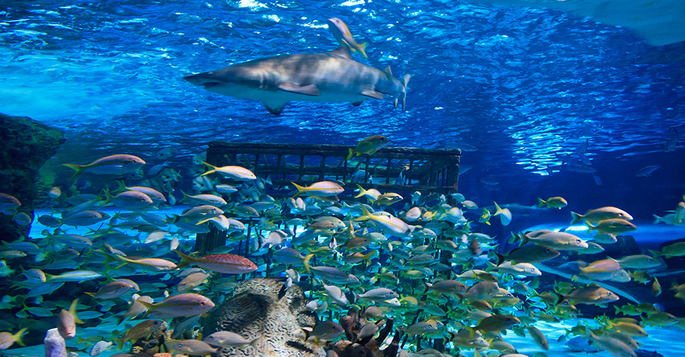
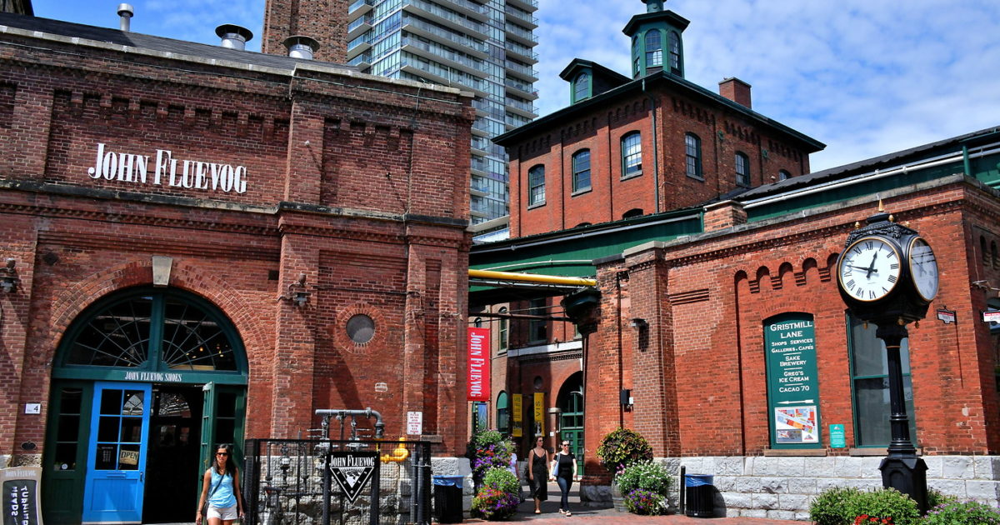

TORONTO
Diversity Our Strength
 The CN Tower
The CN Tower
CN Tower
One of Canada’s greatest landmarks and one of the seven wonders of the modern world, the CN Tower has come to define the Toronto skyline. At 553 metres in height, this engineering wonder is hard to miss during any trip through the city and you don’t want
to miss it. Beyond being a very cool building you can take an elevator up to the revolving 360 Restaurant for world-class dining. Feeling a bit bold? Walk across the glass floor, only 2.5 inches thick, 113 storeys above the ground. Want
an even bigger thrill? Travel up another 33 storeys to the Skypod lookout. Still not daring enough? Strap on a harness, head outside, and take a thrilling walk along the building’s edge with nothing but air between you and the ground,
in the not-for-the-faint-of-heart EdgeWalk experience. This adrenaline-inducing activity is actually the world’s highest ‘hands-free walk,’ so you can brag about that one to your friends
 The Royal Ontario Museum
The Royal Ontario Museum
The Royal Ontario Museum
The Royal Ontario Museum is the biggest museum of world cultures and natural history in Canada. Located right in downtown Toronto, the striking main entrance to the museum, known as The Crystal and designed by Michael Lee Chin, will draw you in right
away. Inside, the museum houses exhibits that run the gamut from dinosaurs to ancient Egypt to Canada’s First Nations. It’s hard to categorize the, oh, six million-or-so objects the museum has in its collections, but trust us, you’ll be
able to find something you really enjoy. As you walk from floor to floor, past the 25-metre totem pole, you’ll encounter art, history, archeology, mineralogy, geology, paleontology, zoology, and elements of any other -ology you could probably
imagine! With something new to discover every time you visit, the 100-year-old museum is a favorite of locals and tourists alike.

Ripley’s Aquarium Of Canada
Ripley’s Aquarium of Canada
Do you like the idea of coming face to face with a shark, separated only by a pane of glass? The Ripley’s Aquarium of Canada allows you to live that experience, while exposing you to another 16,000 marine animals hosted on site. It takes 5.7 million litres
of water to host all of those animals, from southern stingrays, to 65-year-old giant lobsters, to giant pacific octopus, to nettle jellyfish. Explore life on the reef, walk in safety under a dangerous lagoon, stick your head in an underwater
viewing bubble, or take in a stingray dive show. Open 365 days a year, you can always turn to the Ripley’s Aquarium of Canada for an exciting day—whether it’s an angelfish on Christmas Day, or a stingray on your birthday.

Distillery Historic District
Distillery Historic District
Restaurants, boutiques, arts, and entertainment are The Distillery Historic District’s claim to fame. This pedestrian-only village features more than 40 heritage buildings that now house everything a modern traveller might enjoy. New fashion can be found
in restored, Victorian-era buildings; culinary inventions are hidden behind weathered red brick walls; and art galleries and performance venues host events year-round, ensuring that the old neighbourhood is full of life. The sector gets
its name from the Gooderham & Worts whiskey distillery, which used to occupy many of the buildings.
 The Art Gallery of Ontario
The Art Gallery of Ontario
The Art Gallery of Ontario
A remarkable 90,000 works of art live inside the walls of the Art Gallery of Ontario, one of the biggest and best art museums in North America. Observe the lauded work of Canada’s ‘Group of Seven’ art collective, part of the largest collection of Canadian
art in the world. Then travel the globe, from the African Art Gallery to the extensive European collection, and travel back in time, from the Renaissance and Baroque eras to the present day. Photography, sculpture, graphic art, installations;
Rubens, Goya, Picasso and Rembrandt; the AGO covers it all. Even the building is a work of art. World-renowned architect and Toronto-born Frank Gehry, the man behind the Guggenheim Museum Bilbao, designed an expansion to the AGO in 2008
that has earned critical acclaim. If you love art, there’s no better place in the city to be.
 Casa Lama
Casa Lama
Casa Loma
Believe it or not, the only full-sized castle in North America is actually located in Toronto. Casa Loma literally has everything you could want from a castle. There are turrets offering beautiful views of the city. There’s a large library and nearly
100 rooms to explore. There are secret passageways to discover, including a 245-metre tunnel to the stables and carriage house, the latter of which features an exhibit of vintage cars from the early 1900’s. Plus it has five acres of gardens
full of beautiful flowers, sculptures and fountains. Plug in your headphones, listen to the digital audio guide, and roam around a castle in the city.
 Rouge National Urban Park
Rouge National Urban Park
Rouge National Urban Park
Rouge National Park is Toronto’s own slice of paradise and Canada’s only urban National Park. It is an ecologically protected zone in the Greater Toronto area that straddles cities including Toronto, Markham, Pickering and the Township of Uxbrigde. At
a total of 79.1 square km of land, Rouge National Park is an excellent day spent out of the city to reconnect with nature. The options are endless at Rouge, where you can find yourself cycling, hiking, swimming, kayaking, camping, and
so much more.